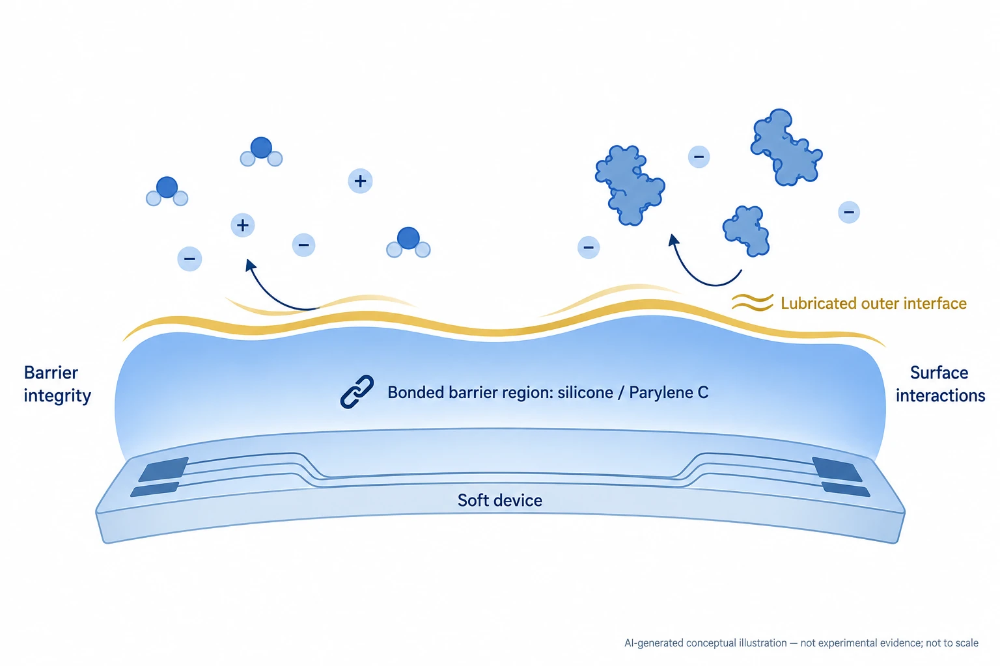

Overview
This study presents a Multi-layered Organic-based Liquid Encapsulation (MOLE) for implantable bioelectronics, built from amine-functionalized silicone elastomer and Parylene C layers with a silicone-oil-infused outer surface, developed by the BLISS Lab (Jungmok Seo) at Yonsei University with Brigham and Women's Hospital, Harvard Medical School. The authors reported an 86-fold improvement in adhesion strength over Parylene C and a 160-fold increase in insulation lifetime in accelerated aging at 85 °C, and magnesium antennas under MOLE degraded at 0.45 dB/day after subcutaneous implantation in mice, compared with 0.814 dB/day under Parylene C.
Background
Implanted devices face moisture permeation, mechanical stress from tissue motion, and biofouling by proteins and cells that can lead to inflammation and fibrotic encapsulation. Inorganic barriers such as silicon oxide, nitrides and metal oxides have low water vapor permeability but are brittle, while polyimide, Parylene C and silicone are compliant but permeable through their free volume. Hybrid organic–inorganic films require high processing temperatures and cleanroom fabrication and remain prone to cracking. Liquid-infused encapsulants have been explored, but fluorinated oils such as perfluoropolyether have not been widely validated for long-term implantation.
Design and approach
MOLE alternates a spin-coated amine-functionalized silicone adhesion promoter (about 100 nm) with a 2 µm Parylene C layer, followed by a second silicone layer that is swollen with high-viscosity silicone oil (1000 cSt). Methoxy groups in the silicone hydrolyze and condense with surface hydroxyl groups to bond to the substrate, and the amine groups are presumed to react with p-xylylene radicals during Parylene C deposition to form interfacial C–N bonds. The soft silicone layers sandwiching the rigid Parylene C act as a mechanical buffer, the matched surface energy lets the outer silicone retain the oil, and the oil is proposed to fill free volume in the polymer, lengthen water diffusion paths and present a low-energy surface that resists protein adsorption.

AI-generated concept: MOLE's bonded protective region and outer lubricated interface have different roles. Reducing water and ion ingress and controlling biological attachment require separate tests. The illustration does not reproduce the actual layer stack or experimental results.
Generated for this library to illustrate the design; it is not a figure from the paper and does not show measured data.
How it was evaluated
The authors characterized the coating by FTIR, XPS, contact and sliding angles on eight substrate materials, optical transmittance, protein (fibrinogen and albumin) and blood adhesion, and lubricant retention in agitated PBS for two weeks. Mechanical tests included finite element analysis, 1,000-cycle bending, tensile toughness, 90° peel and ISO 2409 cross-cut tests. Barrier performance was assessed by water permeability, impedance spectroscopy and leakage current of coated gold interdigitated electrodes in PBS at 85 °C, and by wireless reflection coefficient (S11) tracking of moisture-sensitive magnesium antennas at 85 °C and 85% relative humidity. Coated antennas were implanted subcutaneously in the abdomen of female ICR mice for 7 days and compared with uncoated and Parylene C-coated antennas, with histology, serum cytokines and liver enzymes as biocompatibility measures.
Key results
MOLE gave a water contact angle of 108.2°, similar to the 109.2° of the adhesion promoter, and rendered all eight tested substrates, including PTFE and titanium, lubricant-infusible. The abstract reported protein adsorption below 1% and a sliding angle below 10°; in fluorescence assays, MOLE reduced fibrinogen and albumin adsorption by more than 22-fold and 17-fold relative to bare substrates. Contact angles showed no measurable change after two weeks in PBS at 37 °C on an orbital shaker, and MOLE-coated PET appeared as transparent as bare PET and showed consistent transmittance over 400–1000 nm.
Finite element analysis showed the maximum internal stress decreasing from 54 to 21 MPa when silicone buffer layers were added. After 1,000 bending cycles, Parylene C films showed pronounced microcracks while MOLE showed minimal damage, and MOLE had threefold higher toughness. Adhesion strength was reported as 86-fold that of Parylene C in the abstract and about 80-fold on glass in the 90° peel test. In the cross-cut test, Parylene C delaminated entirely after one cycle, whereas MOLE remained fully adhered after 10 cycles.
Lubricant infusion reduced water permeability by about 75% relative to non-infused samples, corresponding to a 68% improvement over Parylene C. In PBS at 85 °C, the impedance of Parylene C-coated electrodes deteriorated within 12 h, whereas MOLE remained stable for more than 60 h with a phase angle near −90°, and leakage current reached the 1 nA failure threshold within 10 min for Parylene C but stayed at the nanoampere level for up to 15 h for MOLE. The authors summarized this as a 160-fold increase in insulation lifetime, equivalent to approximately 445 h at 37 °C. Under 85 °C and 85% relative humidity, the S11 magnitude of magnesium antennas increased by about 13, 10 and 7 dB per 24 h for uncoated, Parylene C and MOLE samples.
In mice, S11 of the implanted antennas rose by 1.027 dB/day without coating, 0.814 dB/day with Parylene C and 0.45 dB/day with MOLE over 7 days. Histology after one week showed no abnormal collagen deposition and reduced F4/80-positive macrophage infiltration around MOLE-encapsulated implants, whereas control implants showed denser collagen at the interface. Serum TNF-α and IL-6 were comparable to sham-operated mice, and AST and ALT remained within the normal range.
Open questions
The authors stated that future work will need to validate long-term performance in extended implantation models, assess stability under physiological conditions, and optimize lubricant retention and encapsulation integrity under dynamic mechanical stress. The in vivo evaluation covered 7 days of subcutaneous implantation.
Related research
Ultraflexible organic photonic skin
The related study demonstrates conformable, encapsulated light-emitting and detecting devices. MOLE examines bonded protective layers and fouling in an implantation context.
Abstract-based introductionSources used in this summary
This summary is based on the main text, figure legends and Methods of the published version of record in Small (15 pages); the supporting information (Figures S1–S8) was not reviewed, and the derivation of the 445 h estimate at 37 °C was not found in the main text.